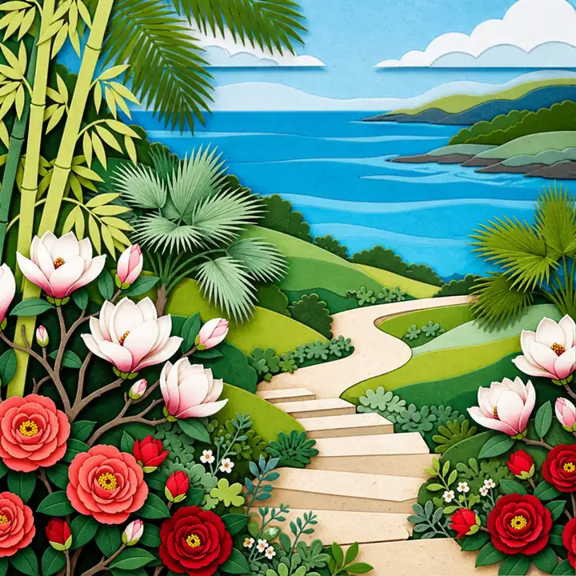
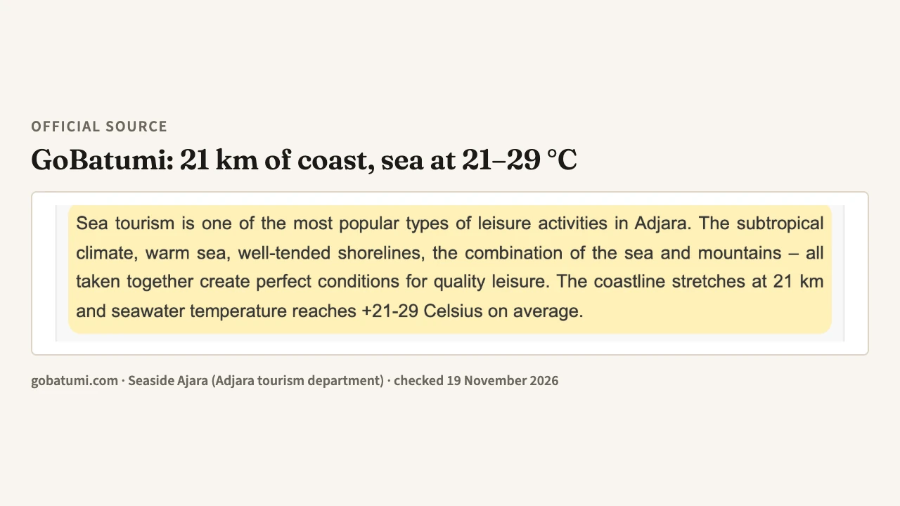

- Coastline of Adjara
- 21 km
- Sea temperature, average (GoBatumi)
- 21–29 °C
- Hottest month
- July, 31 °C average high
- Rain
- about 2,500 mm a year
- Emergency number
- 112
This page is about Georgia the country, not the US state, and is part of our guide to healthcare in Georgia. Checked on 19 November 2026.
Things to do in Batumi
Our tip: start on the seafront, then walk into the old town. The botanical garden lies about 9 km outside the city and is a separate trip.
Batumi Boulevard
It is the seaside promenade, and it now runs for 7 km. Construction began in 1881. GoBatumi, the site of Adjara's tourism department, writes about the boulevard: "In 2009, the length of the Boulevard was significantly increased and now reaches 7 kilometers."
What you will find. It is "full of beach bars, café-lounges, restaurants, amusement rides for children and various colorful and dancing fountains".
Ali and Nino. GoBatumi suggests you "Check out Ali and Nino sculpture" and start your walk from there. The Alphabet Tower stands close to the lighthouse.
Wi-Fi. According to GoBatumi's tips for visitors, there is public Wi-Fi along the boulevard.

Old Batumi: Piazza and Europe Square
The old town is where the city's best-known statues and squares are. Next to Piazza, in the alcove of a historic house on Gorgasali Street, stands the statue of a boy with a flute. GoBatumi notes that it "is considered to be a symbol of Batumi".
Europe Square. The tourism site lists Europe Square and the Astronomical Clock nearby among the city's meeting places.
With children. Consider the dolphinarium: GoBatumi says it first opened in 1975 and holds its shows "in any weather"; check the schedule on dolphinarium.ge.
Batumi Botanical Garden
The garden is about 9 km from the city and was founded in 1912 by professor Andrej Krasnov. According to GoBatumi, it "occupies about 1 km of the coastline and grows 0-220 m above sea level".
Hours. On the garden's site, bbg.ge, the opening hours are 09:00–17:30. The garden counts "100 k+" visitors a year. Hours can change, so check before you go.
Our tip: wear shoes for slopes. The garden rises from sea level to 220 m, so expect steady ups and downs. In summer, go in the morning and carry water.

Batumi beach and the sea
The shore is pebble, and the swimming season starts in May. GoBatumi's Seaside Ajara: "The coastline stretches at 21 km and seawater temperature reaches +21-29 Celsius on average." It describes "pebbles on the shore".
When to swim. According to the tourism site, visitors "can sunbathe or swim as early as the beginning of May", and "The sea becomes even more pleasant during September and October", adds GoBatumi on the long season.
Resorts along the coast. Besides the city itself, GoBatumi lists Kobuleti, Tsikhisdziri, Chakvi, Green Cape, Gonio, Kvariati and Sarpi.
Rescue services. On 20 June 2026, Georgia's Ministry of Internal Affairs opened the summer season in the city. The minister said that "Additional police and rescue forces have been mobilized in Ajara", and the event ended with "a water rescue simulation exercise", the Government of Ajara reports. We found no official list of guarded stretches of shore, so ask at your hotel.
Our tip. Swim where lifeguards are on duty. Stay out of the water after a storm and after drinking alcohol. Pebbles are hard on bare feet, so bring water shoes.
Sun and water. The NHS sun safety advice warns: "Water washes sunscreen off, and the cooling effect of the water can make you think you're not getting burned. Water also reflects ultraviolet (UV) rays, increasing your exposure." Put sunscreen on again straight after you come out.

Batumi weather by month: heat and rain
Expect hot, humid summers and heavy rain in autumn. The Batumi weather figures below are 1981–2010 averages for Batumi Airport from NOAA, as summarised on Wikipedia. Rainy days are days with at least 1 mm of rain.
| Month | Average high, °C | Rain, mm | Rainy days |
|---|---|---|---|
| Jan | 6.6 | 235 | 14.0 |
| Feb | 7.6 | 183 | 12.7 |
| Mar | 12.3 | 157 | 12.6 |
| Apr | 18.6 | 90 | 9.6 |
| May | 22.8 | 93 | 9.6 |
| Jun | 27.7 | 141 | 9.9 |
| Jul | 31.1 | 165 | 10.1 |
| Aug | 30.9 | 221 | 11.5 |
| Sep | 26.1 | 330 | 11.1 |
| Oct | 19.4 | 322 | 12.4 |
| Nov | 12.4 | 306 | 12.2 |
| Dec | 7.6 | 278 | 13.1 |
Hot months. July and August have the highest average daytime temperatures, about 31 °C. The record in the same table is 40.8 °C, set in July.
Wet months. Rain falls all year, about 2,519 mm on average, on roughly 10 to 14 days a month. September, October and November each get more than 300 mm. Wikipedia calls the city "the wettest city in both Georgia and the entire Caucasus Region".
Dry months. April and May are the driest, with about 90 mm each.
Humidity. GoBatumi's seasons guide calls Adjara's climate "subtropical, with mild winters and hot summers". Relative humidity is usually 70 to 80%, according to Wikipedia.
Best time to visit. Our tip: for the sea without the July peak, aim for June or September. September is warm and the sea is "even more pleasant", says GoBatumi, but it is also one of the wettest months, so pack a rain jacket.

Staying healthy in the summer heat
Hot, humid days in July and August can cause heat exhaustion, which can turn into heatstroke. NHS advice on heat exhaustion and heatstroke gives simple steps to prevent it:
- "drink more cold drinks, especially if you're active or exercising";
- "wear light-coloured, loose clothing";
- "avoid the sun between 11am and 3pm";
- "avoid drinking too much alcohol".
Sunscreen after the sea. The NHS advises reapplying sunscreen straight after you have been in water, even if it is "water resistant", and about every 2 hours.
Who is most at risk. The NHS asks you to check on "children, older people and people with long-term health conditions, such as diabetes or heart problems".
Signs of heatstroke: dial 112. The NHS lists signs that need an ambulance, including "still being unwell after 30 minutes of resting in a cool place", "hot skin that's not sweating", a fast heartbeat or fast breathing, "confusion", "a seizure or fit" and "loss of consciousness". In Georgia, dial 112. While you wait, move the person into the shade and cool them with water and a fan. Here is how to call an ambulance on 112 and what to say.

Day trips: Gonio fortress and Makhuntseti waterfall
One trip goes south along the coast, the other inland to the hills. Keep in mind that medical care outside the city is limited.
Gonio fortress
It is an old fortress 12 km south of the city. Per GoBatumi, Gonio-Apsaros fortress stands "on the left embankment of river Chorokhi" and "dates to the I century A.D." It served the Roman Empire, then Byzantium, and later became an Ottoman stronghold.
The legend. Its history is linked to the myth of the Argonauts. King Aeetes, the story goes, buried his son Apsaros here after Jason killed him.
Our tip. On a summer day, go early and take water and a hat.
Makhuntseti waterfall and Tamar Bridge
Both are about 33 km inland, on the Adjaristskali river. A GoBatumi article from 2018 gives the distance from Europe Square as 33 km. Its fares and timetable are out of date, so we do not repeat them.
Tamar Bridge. The stone arched bridge is "28 meters long" and, according to legend, was built in the 12th century.
The waterfall. It is across the road from the bridge, about a 5-minute walk.
Help is further away. Canada's travel advice warns: "In rural areas, there are shortages of medical supplies and personnel." Our tip: wear shoes with grip on wet rocks by the river, carry water and keep 112 saved on your phone.
Getting to Batumi from Tbilisi
Our tip: the train is the simplest option. Georgian Railway's general timetable lists daily fast trains between Tbilisi and Batumi. Times and fares change, so check there before you travel.
By air. Batumi Airport is "one of three international airports in the country", Wikipedia notes. Check routes with your airline.
Hospitals and medical help in Batumi
Good care is available in the city. Canada's travel advice, last updated 27 August 2026, says: "High-quality medical services and facilities are generally available in major cities, such as Tbilisi and Batumi." It also warns: "Medical personnel may not speak English. Medical services can be expensive, and immediate up-front cash payment is often required."
In an emergency. Dial 112. GoBatumi calls it the "unified emergency number for police, fire rescue and medical services". The UK's travel advice on health says: "Dial 112 and ask for an ambulance. Contact your insurance company quickly if you're referred to a medical facility for treatment."
Finding a doctor or a hospital. The catalogue of doctors and clinics in Batumi on 100doc.ge listed, when we checked on 19 November 2026, 834 doctors and 311 clinics, including hospitals and dentists.
Language. Our tip: keep your address and any medical conditions written down in English. The Tourist Information Centre answers on +995 577 90 90 93.
Your policy. Since 1 January 2026, visitors need health and accident cover for their whole stay of at least 30,000 GEL; see the entry rule.
Dog bites. If a dog bites or scratches you, see a doctor promptly; our rabies guide explains why. For crime, protests and roads, see Is Georgia safe?
Frequently asked questions
What is the best month to visit Batumi?
June or September, in our view: both are warm enough to swim. July and August are the hottest, at about 31 °C. September to November bring more than 300 mm of rain a month.
How often does it rain in Batumi?
Often: about 2,519 mm a year on average, on roughly 10 to 14 days a month. April and May are the driest months.
When can you swim in the sea?
From the beginning of May, says GoBatumi, and the sea is "even more pleasant" in September and October. The shore is pebble, so bring water shoes.
Is there good medical care in Batumi?
In the city, yes, says Canada's travel advice, but staff may not speak English and care can be expensive, often paid up front in cash. Outside the city, care is limited.
What number do I call in an emergency?
Dial 112 for police, fire rescue or an ambulance.
Is 2 days enough for Batumi?
For the main sights, yes, in our view: one day for the boulevard and the botanical garden, one for the old town and Gonio. Add a day for Makhuntseti or the sea.
Do people speak English?
Not everyone; Canada warns that medical staff may not. Keep key details written down and ask the Tourist Information Centre on +995 577 90 90 93.
Sources
- GoBatumi (Adjara tourism department): the boulevard
- GoBatumi: the city, Piazza and the boy with a flute
- GoBatumi: the long sea season, swimming from May, statues and squares
- GoBatumi: Seaside Ajara (coastline, sea temperature, resorts)
- GoBatumi: weather and seasons
- GoBatumi: the botanical garden
- GoBatumi: the dolphinarium
- GoBatumi: Gonio-Apsaros fortress
- GoBatumi: Makhuntseti and Tamar Bridge (2018)
- GoBatumi: getting around (Wi-Fi, 112, Tourist Information Centre)
- The botanical garden's own site (hours, visitors)
- Dolphinarium: show schedule
- Government of Ajara: summer season opens, 20 June 2026
- Wikipedia: the city (weather records summarised on Wikipedia from NOAA normals, airport)
- Georgian Railway: general timetable
- Government of Canada: travel advice for Georgia, health
- GOV.UK travel advice for Georgia: health
- NHS: heat exhaustion and heatstroke
- NHS: sunscreen and sun safety
This guide is general information, not medical advice: the doctor decides on your care.